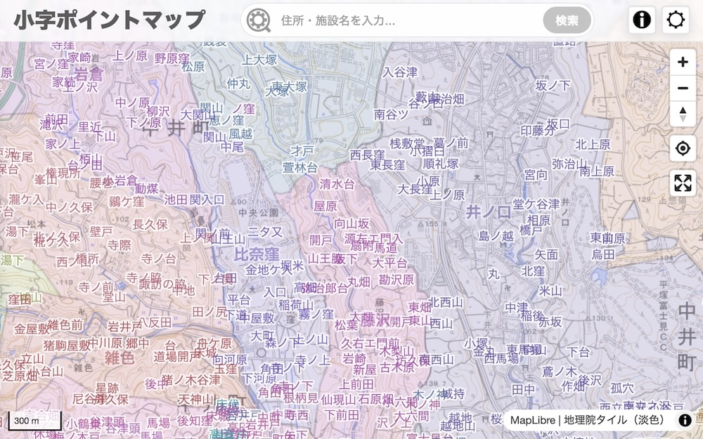
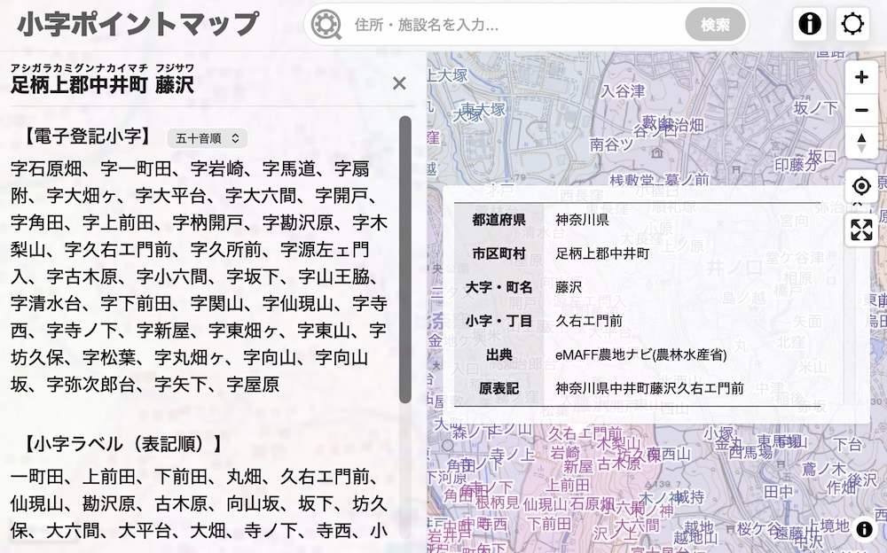
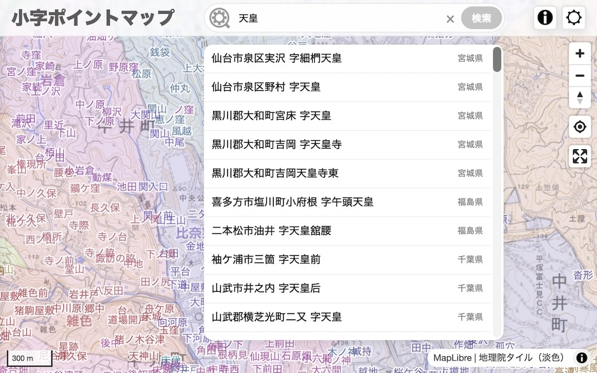
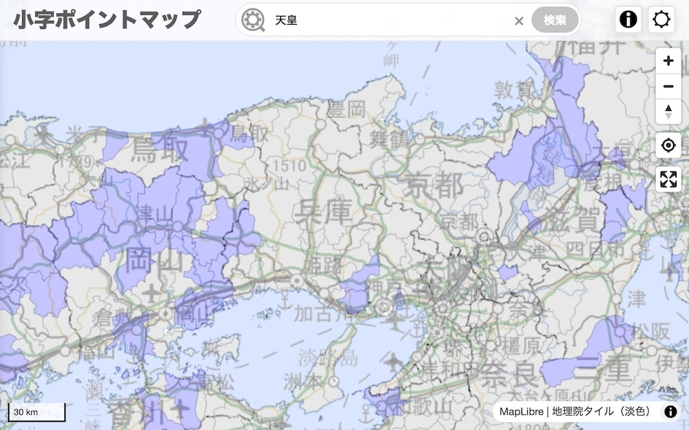

「小字ポイントマップ」は、全国の小字のおおよその位置を表示・検索できるweb地図です。




地図に表示される地名(大字・小字)は、大字・町丁目レベル位置参照情報(2024)、eMAFF農地ナビ(2025年12月〜2026年2月にかけて収集)、その他の情報によりプロットしたものです。なお、一部、表記の修正や代表点推定等の加工を行っています。
本サイトの小字情報は、地図上に表示されるラベルに加え、電子化された不動産登記に存在する小字(以下、登記小字)を含みます。登記小字の情報は登記・供託オンライン申請ステムにおいて所在検索画面に選択肢として現れる小字を収集したものです(2025年1月〜3月にかけて収集)。なお、旧大字名を冠称した小字名等については、適宜冠称を分離する等の加工を行っている場合があります。また、大字以下に複数の階層がある場合は「【上位】〔中位〕低位」のように記載してあります。
市町村名および大字名に付した読み仮名は、日本郵便の郵便番号データに依りました。ただし、一部アドレス・ベース・レジストリや施設名等により補完・修正してあります。
登記小字の中で画像で表示される文字(外字)については、Noto Sans JPをもとに作図しました。
地図上に表示される大字領域は、国勢調査小地域(2015年)をベースに、適宜加工したものです。データの特性上、実際と大きく異なる境界となっている場合があるためご注意ください。データ加工に際して参考にした資料は以下の通りです。なお、資料によらず尾根筋・谷筋で境界を分割している場合があります。